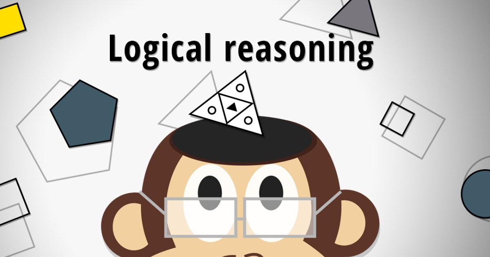
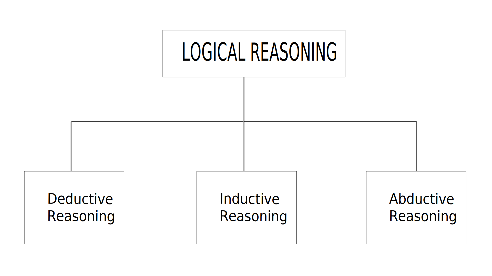
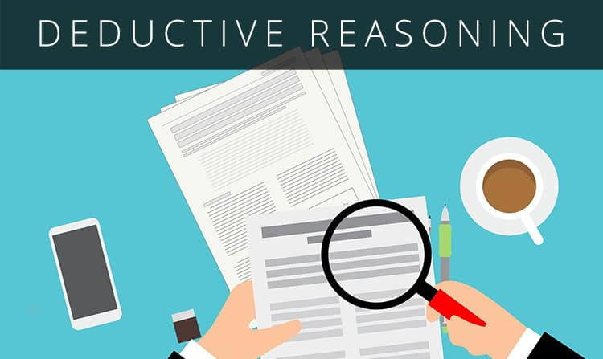
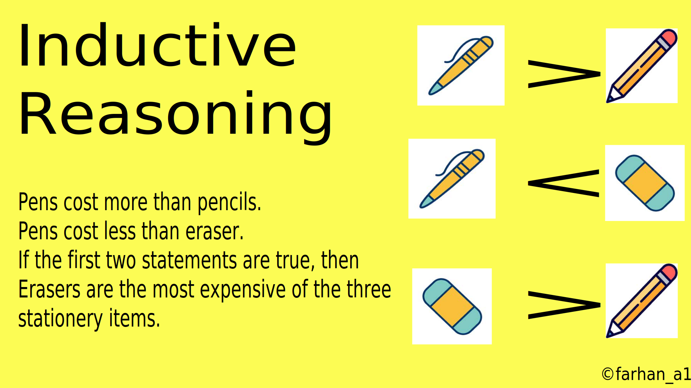
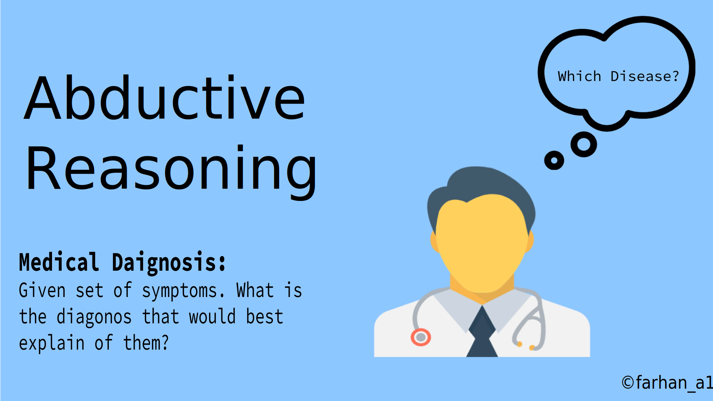

Analytical skill is the ability to draw an appropriate conclusion and solution based on the given information including statistics, assumptions and logical argument or to solve a problem. Playing a chess game with friend is the best example of showing your analytical abilities. While playing, you have to think and view the problem from different angels and take a best possible decision to overcome the complications.
To gain these skills, you need to be proficient in different areas including logical arguments, research, critical thinking, communication and creativity. These characteristics are not blessed at the time of birth, but you will get this with the passage of time, practice and experience. Analytical skills play a crucial role in analyzing and solving the problems effectively. Most of the employees look for those candidates for their organization who can manage and solve the problem within time, in a perfectly manner.
Logical reasoning is a type of argument or assumption you make on the basis of given input, data and information. Most of the time, it leads to a possible right conclusion, but it’s not always the case. There may be some cases where you make a right assumption but it results in false conclusion. For example, you may think that “All human beings are not equal. So, based on this assumption, you can say some people are good and some people have bad attitudes.” It seems reasonably logical.
But if a person concludes that “Those who complete their degree from well-known institutes always get the jobs in prominent companies.” It is obvious that conclusion is not right. For logical reasoning, your assumption and argument should be clear and correct. To further elaborate this term, there are three kinds of logical reasoning which are:
To embark on deductive reasoning, you need to be aware of the term “hypothesis”. Hypothesis is a tentative assumption made for the purpose to draw out the consequences of a particular situation. Deductive reasoning is a valid type of argument commencing with a particular opinion, then find out a reasonable approach to reach to a specific, logical goal.
In simple words, it can be described as “to make assumptions based on an assumption”. But this assumption should be reasonably correct. For example, you may say that “Necessity is the mother of invention. Therefore, beside creation of everything, there is a reason.” It looks fine. But what, if someone argues that because “Most of the terrorists are Muslims. So, everyone belongs to the Muslim community has to be a terrorist.” Deductive reasoning can be inaccurate or it can be totally wrong.
Inductive reasoning is based on the information you are provided with, from these reliable data and statistics, you establish and examine the best feasible approach to solve a specific problem. For example, you are provided with the facts that “Manufacturing products from useable materials require 60% of less energy and 40% of less amount, as compared to the products produced by the materials of scratch.”
Based on these stats, you can say that recycling should be encouraged because it contributes in reducing amount and energy. All scientific laws are based on inductive reasoning. As Inductive reasoning is reliable on faithful evidences, therefore, there is a rare chance that the conclusion is incorrect. It can be inaccurate for a given situation because of weak argument.
Abductive reasoning is to make a conclusion that would best suit the given information. In abductive reasoning, the information and evidences are incomplete. There is deficiency of data and evidences. In this situation making a perfectly reasonable conclusion is an extraordinary skill. For example, a judge may take a decision to sentence or release a culprit based on the incomplete evidences, but he is not sure either he decided rightly or not.
In most of the cases, jury announce decisions using deductive reasoning. The decisions, you take in your daily life, are also combined abductive reasoning. Abductive reasoning is actually based on incomplete observations of a particular situation.